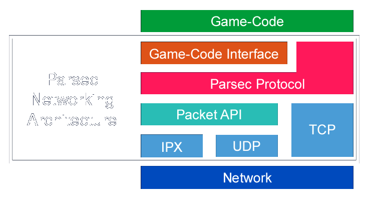

Parsec Networking Architecture© by Markus Hadwiger and Andreas Varga in 1998 |
|
| 1. | Introduction |
| 1.1 | Goals |
| 1.2 | The Big Picture |
| 1.3 | Code Structure |
| 1.4 | Dynamic Subsystem Binding |
| 2. | Networking Subsystem Structure |
| 2.1 | Game-Code Interface Layer |
| 2.2 | Remote Events |
| 2.3 | Parsec Protocol Layer |
| 2.3.1 | Peer-to-Peer Protocol |
| 2.3.2 | Slotserver Protocol |
| 2.3.2.1 | Connecting to a Slotserver |
| 2.3.2.2 | Disconnecting from a Slotserver |
| 2.3.2.3 | Changing your name on a Slotserver |
| 2.3.2.4 | Client-list Updates |
| 2.3.3 | Gameserver Protocol |
| 2.4 | Packet API Layer |
| 2.4.1 | User Datagram Protocol (UDP) |
| 2.4.2 | Internetwork Packet Exchange (IPX) |
| 3. | Parsec Masterserver |
| 3.1 | Masterserver Protocol |
| 4. | Portability |
The purpose of this document is to describe the networking architecture
of Parsec. Parsec is a 3-D space-fight computer game that we are currently
developing. The main focus of Parsec is network game play and
therefore network play performance and smoothness have been a
very high priority design criterion right from the start. Another
important technical design criterion for Parsec was that it should
be easily portable between different host platforms. Our current
implementation supports DOS, Win32, MacOS, and Linux; other platforms
could be supported relatively easily, however, by just implementing
the platform-specific subsystems for the desired platform.
This document describes the concepts and implementation of the
networking architecture we have designed to support smooth game
play on local area networks as well as on the Internet. The actual
implementation is hidden behind several abstract layers each exporting
a uniform interface. The lowest of these layers encapsulates the
transport protocol provided by the host system. We currently support
Novell's IPX for playing on LANs and the TCP/IP protocol suite
for playing on the Internet (or any other network supporting TCP/IP,
including LANs, of course). The protocols of the TCP/IP protocol
suite we actually use are TCP for connection management, which
is not time-critical and only performed when connecting to or
disconnecting from a game server, and UDP for transmission of
game state, which is performance-critical and done periodically
with frequencies between five and sixty Hertz, depending on the
available bandwidth.
In this document we first give an overview of the goals we wanted
to achieve in the development of Parsec's networking architecture.
Next, we describe how network game play in Parsec works in general.
After that, we introduce the general coding convention we use
to ensure flexibility, configurability, and portability. This
encompasses the notion of abstract subsystems that can be bound
dynamically and changed on-the-fly from within Parsec's command
console.
Starting with section 2 (Networking Subsystem Structure) we describe the actual networking subsystem in detail.
This section names some of our major goals we wanted to achieve in the design and implementation of Parsec's networking subsystem. Some of these goals (say, smooth game play) are quite huge issues, while others (say, dynamic HTML page generation by servers) are rather small details that nevertheless are also very important.
The following list contains those goals that are directly visible to the user, i.e., player of Parsec:
The following goals are related to development, maintenance, and porting. Thus, they are not as important to users as they are to the developers. Nevertheless, they have a strong influence on a lot of things that also affect the average user, say, functionality, or number of supported platforms.
The last requirement is a bit of an exception here, as this capability is exported in Parsec's command console where the user can switch protocols on-the-fly. This concerns both low-level protocols (IPX, UDP, etc.) and game protocols (peer-to-peer, client-server). Note that although this document almost exclusively mentions aspects of the networking subsystem, these goals equally apply to all other subsystems. For example, the video subsystem may also be changed dynamically.
The issues brought up by the design goals listed in this section will be elaborated upon in the remainder of this document.
In this section we try to provide a basic understanding of how everything else that will be described in detail later on fits into the overall picture, that is, into the actual computer game. We describe what network game play is all about, how users interact with Parsec and its networking, and other related issues like client- and server-side simulation.
There are a number of issues and corresponding problems when integrating network game play into a computer game. Naturally, these depend tremendously on the kind of game it is, what players can and cannot do, how the world is represented and visualized, and so on. In Parsec, nearly all interaction is done via a single spaceship that the player navigates through outer-space. Apart from small objects that can be collected and do not move about by themselves (e.g., extras for more energy, a missile pack, etc.), there is a restricted number of different kinds of moving objects. The most important moving objects are the players' spaceships. Each player controls his/her spaceship and is able to create other moving (e.g., missiles) and static (e.g., mines) objects. All these things have to be replicated over the network at all the other players. Note that in later sections players will always be referred to as clients, whose actions are comprised by everything the player does as well as everything the networking subsystem of his Parsec process does.
Generally, the information created at each client can be categorized
into state information and events. State information subsumes
the current state of everything that all other clients always
need to know about. That is, in the case of Parsec, the local
player's position and orientation. These are mostly unconstrained,
i.e., there are no walls the player can bump into or other artificial
limits, apart from collision detection with other ships. The current
state is part of every network packet Parsec sends to other players
or the server, respectively.
Everything else is done via the notion of events (see the section
on remote-events). First, this is economical since the player always has to do
something special in order to create an event. This could be something
like pressing the button of a joystick to fire the ship's laser,
or using the 'name' command in the command console to change the
player's name, for example. If the player doesn't do anything
there will be no events. Second, it's also both very convenient
and versatile since the game server can process events differently,
say, according to different priorities with respect to latency,
for instance.
State, on the other hand, will normally change every single frame
if the ship is moving or rotating at all. State and events are
fundamentally different, one is the continuous change of a certain
parameter like position over time, and the other is the occurrence
of, well, events at discrete instants in time. Nevertheless, bandwidth
can also be saved when transmitting state information, for instance
by using dead-reckoning.
In general, dead-reckoning describes an approach to state transmission
where prediction of a client's actions in conjunction with extrapolation/interpolation
is used to cut down on the amount of information that actually
needs to be sent. In the case of a spaceship, we can send the
current velocity and/or acceleration along with the current position
and the server can extrapolate the position at any time later
on, that is, predict the client's position, provided the client
doesn't change its velocity. Normally, both client and server
perform the same prediction algorithm in order to determine whether
the deviation of the predicted position from the actual position
is high enough to justify sending another state update.
In Parsec we use a very simple approach to dead-reckoning. Currently,
state updates are only omitted from sending if the state hasn't
changed at all. Apart from simplicity, there are two reasons for
this. First, the maximum number of concurrent players in a single
game (16) is currently very low. You can't play a death-match
kind of game with a very high number of players anyway, since
the game play from a user perspective simply won't work. The second,
very important reason is that if a player does anything at all
(i.e., he is not currently typing funny comments in the command
console) state changes are nearly always too important not to
be sent. That is, the error threshold would be constantly exceeded.
And, furthermore, we already have to use interpolation and smoothing
code to get a smooth appearance of a player flying (and navigating)
at 40 frames per second but whose packet send frequency is below,
say, 20 Hz.
To summarize, if the state changes at all, state updates are sent
at the highest possible frequency, that is the frequency possible
for the current bandwidth. This packet send frequency is user-selectable.
This is necessary to achieve smooth game play which is a very
important issue and should really be provided to the player, most
importantly since the number of players is never very high (at
least with respect to scenarios where a sophisticated dead-reckoning
approach becomes crucially important).
Another very important issue is, simply put, who is responsible
for what. That is, in a client-server game, who performs the actual
simulation, the client, the server, or both a part of it? For
example, a user presses a button to fire something nasty at one
of his colleagues.
In, say, scenario one the client sends a request for the actual
event to the server, the server creates the corresponding object
(e.g., a missile) and sends the object's state back to the client.
Every time the state of the missile changes (significantly) a
state update is sent from server to client. The crucial thing
about this approach is latency. If the latency is not extremely
low the user will experience a perceptible delay between his action
(pressing the button), and the event's occurrence (the missile
rushing away at breakneck speed). We will dub this approach server-side
simulation. The same problem applies to movement, that is, if
the server determines whether a certain movement is allowed after
performing collision detection the user will perceive considerable
lag if the latency is too high. A possible remedy for the problem
of perceived latency would be to allow the client to move in advance
and try to recover if the server sends back something different
later on, say, the movement hasn't actually been possible due
to a collision with another spaceship.
In scenario two, which we will call client-side simulation, the
client is basically allowed to do everything without consulting
the server first and only has to inform the server of what he
does/has done and gets information from the server about what
the others do. In this case there is the problem of considerable
inconsistencies since there is no central server ensuring race-conditions
and other conflicts are resolved properly.
There also is the issue of who should calculate the actions of
non-player-controlled objects like mines, energy-fields and the
like. Both approaches of the scenarios above could be combined.
Say, some things could be simulated on the server side and other
things on the client side.
In Parsec we currently use a strict client-side simulation approach. That is, there is no perceptible delay between an action and the corresponding event. The client informs the server of what events occurred, the server forwards this information to the other clients who then replicate the events. Normally, at least some things would have to be simulated on the server and our simple approach is currently only feasible due to the simplicity of the world. In the future we are certainly going to introduce certain aspects of server-side simulation, although the local player's actions will almost certainly always be simulated on the client-side to avoid very disturbing lag. After all, a frame rate of 40 Hz is of no big use if user actions can only cause events a few hundred milliseconds later on.
All networking code is written in a C-like subset of C++. This means that we use things like C++ comments and inline variable declaration but we don't use classes, templates, and the like. In order to still be able to determine which subsystem a, say, function belongs to we encode this information in the function name itself.
We use a rather strict naming convention for module and function names. Every module name of the networking subsystem starts with the NET_ prefix (e.g., NET_RMEV.C, which contains all remote-event functions) if its implementation is the same for all target systems. If the module implements a specific functionality but the implementation differs from system to system its name starts with the Nx_ prefix where x denotes the target system. For example, UDP function implementations for Win32 are contained in NW_UDP.C, whereas the corresponding implementations for the MacOS are contained in NM_UDP.C. These modules export the exact same interface, that is, the caller always uses the same function name, although the actual implementation will be quite different for each system.
Every interface function of the networking subsystem starts with
either the NET_ or the NETs_ prefix.
The implementation of NET_ functions is the same for every system,
i.e., these functions are not system-dependent. Their implementation
is portable code that is used for every target system. For this
reason these functions are always bound statically. In C++ NET_
functions would be non-virtual member functions. For example,
utility functions like NET_FetchPlayerName() belong to this category.
The implementation of NETs_ functions, however, differs from system
to system and this fact is already announced by their function
name. The caller doesn't know which implementation will actually
be called at run-time. First, for each system the implementations
will always be different, although the function name will be the
same. Furthermore, if dynamic binding is enabled (via a compile-time
switch) the implementation may be switched at run-time. For example,
the abstract interface specifies a NETs_SendPacket() function
whose implementation is different on, say, Win32 and Linux, and,
moreover, whose implementation is different depending on whether
a UDP or an IPX packet should be sent. Nevertheless, this is entirely
transparent for the caller. Wherever a call to NETs_SendPacket()
is specified this will work correctly on every system for whatever
subsystem implementation may be currently active at run-time,
say, Win32/UDP, Win32/IPX, or Linux/UDP. NETs_ functions are specifically
named to announce this system-dependence to the caller. If dynamic
binding is enabled NETs_ calls will be routed through a jump-table,
although this may be disabled transparently at compile-time if
on-the-fly subsystem switching is not desired and the overhead
for the indirect function-calls is considered a performance issue.
In C++ NETs_ functions would be virtual member-functions.
As already mentioned in the preceding section, subsystems in Parsec can be bound dynamically in order to allow their changing at run-time (on-the-fly). All interface functions of system-dependent subsystems are called through a jump-table (provided dynamic binding has been enabled at compile-time). For the networking subsystem there is exactly one such jump-table containing the addresses of the currently bound implementation for each function of the abstract interface. If a subsystem is bound or re-bound this jump-table will need to be updated.
On-the-fly networking subsystem switching is very easy:
As will be detailed in section 2 (especially sections 2.3 and 2.4) two important parts of the networking subsystem are the Parsec Protocol Layer, whose implementation depends on the currently active high-level game protocol (the server-less peer-to-peer protocol, and the slotserver and gameserver protocols which are two different client-server protocols) and the Packet API Layer, which encapsulates the currently used transportation layer provided by the host system (say, UDP or IPX). These two components of the networking subsystem can be changed independently during run-time. That is, the connection to the server can be broken and the protocol can be reconfigured to be peer-to-peer instead of client-server, and so on. These issues will become more clear in the next section.
Parsec's networking subsystem basically consists of three distinct layers and their respective abstract programming interfaces. The relationship between these layers is not strictly one-on-top-of-the-other, as can be seen in Figure 1.

Figure 1: Networking subsystem structure
First, there is the Game-Code Interface Layer that decouples the actual game-code from all networking-code
details. Apart from a few general utility functions everything
in this layer is done via the notion of remote-events. If the game-code creates an object, for instance, it invokes
the corresponding function of the game-code interface to notify
the networking-code of this event's occurrence. All game events
that have to be replicated at other clients are dubbed remote-events
in this context.
Second, there is the Parsec Protocol Layer that relates to the way clients communicate with each other.
Details of whether this happens in a peer-to-peer or client-server
fashion, for example, are entirely hidden in this layer. Since
connection management (e.g., establishing and breaking connections)
is contained in this layer it is both used directly by the game-code
as well as by the game-code interface layer.
Third, there is the lowest-level layer that is responsible for
actually sending already composed packets over the network, using
UDP or IPX, for instance. We call this the Packet API Layer.
When developing a network game there is the problem of how the
game-code should interface to the networking code. First, the
game-code should be entirely decoupled from all network implementation
issues. Second, there should be a uniform and abstract interface
between the game-code and the networking-code. In Parsec this
is done through the game-code interface layer. This layer decouples
the game-code from all networking issues that are not directly
related to game play. Note that, as can be seen in figure 1, the
game-code also directly interfaces to the Protocol API which mostly lies beneath the game-code interface layer. Nevertheless,
this is limited to a few functions the game-code invokes to establish
and break a connection and join and unjoin a game, respectively.
Everything else the protocol layer provides is exclusively used
by the game-code interface layer itself.
The decoupling of game-code and networking-code is primarily achieved
through the notion of remote-events. Each remote-event corresponds to an event in the game that needs
to be replicated at the other clients (see section 2.2). The game-code interface mostly is a collection of functions
each corresponding to a specific remote-event. One can imagine
these functions as being callbacks from the game into the networking-code.
Every time an event occurs inside the game, say, a missile is
fired or a particle object is created, the game calls the corresponding
remote-event function to inform the networking-code of this event's
occurrence. These functions basically just record all events and
the next time when a packet is sent the accumulated events are
transmitted and thereafter replicated at the other clients. After
events have been sent they can be deleted at the client that created
them.
Apart from remote-event functions, the game-code interface also
includes a couple of utility functions like NET_FetchPlayerName()
to determine the name of a specific player (for example, to display
the name in the heads-up display), and NET_FetchOwnersShip() to
acquire a pointer to the spaceship of a player who owns another
object (say, a missile or a mine). Ownership of objects is needed
to determine who shot down whom, for instance.
Apart from a fixed-size header containing static game state -
basically just position and orientation of the local player's
spaceship - the content of every network packet is a list of remote-events.
Remote-events describe everything happening in the game-engine
that needs to be replicated at the other clients. The preceding section describes how the game-code creates these remote-events. This
section describes how remote-events are handled by the networking-code.
All functions that create remote-events share the NET_RmEv prefix.
If the player fires a missile, for example, and therefore indirectly
creates a RE_CREATEMISSILE remote-event, the game-code invokes
the NET_RmEvCreateMissile() function. This function creates the
actual event. That is, it allocates and initializes the data structure
and appends it to the global list of remote-events. This list
contains all remote-events that have accumulated since the last
time a packet has been sent in the order of their temporal occurrence.
The low-level networking-code (Packet API Layer) retrieves the events stored in the global list and stores them
into the network packet immediately before it is sent. For those
remote-events that are time-critical (e.g., missile creation,
RE_CREATEMISSILE) the position of the contained object is updated
to the current position at the latest possible time (i.e., immediately
before sending) to ensure that the position is up-to-date at the
time of sending.The following remote-events are currently defined:
| RE_CREATEOBJECT | An object of general type has been created. |
| RE_CREATELASER | A laser object has been created (i.e., fired by the local player). |
| RE_CREATEMISSILE | A missile object has been created (i.e., fired by the local player). |
| RE_CREATEEXTRA | An extra has been created (e.g., a package containing five missiles). |
| RE_KILLOBJECT | A specific object should be removed at all other clients. |
| RE_SENDTEXT | This can be used to send arbitrary text (usually entered in the console). |
| RE_PLAYERNAME | The local player has changed his name, inform other clients. |
| RE_PARTICLEOBJECT | A particle object has been created (e.g., an energy-field). |
| RE_PLAYERLIST | list of currently connected clients (needed by peer-to-peer protocol). |
| RE_CONNECTQUEUE | list of clients currently trying to connect (needed by peer-to-peer protocol). |
The most important remote-events are those that create objects
(RE_CREATEOBJECT, RE_CREATELASER, RE_CREATEMISSILE, RE_CREATEEXTRA,
RE_PARTICLEOBJECT). When another client receives such a remote-event
it will replicate the object described within the event structure.
For example, it will create a missile at a certain position, flying
with a certain speed in a certain direction.
Players can talk to each other by typing text in Parsec's command
console. This text will be transmitted as part of the RE_SENDTEXT
remote-event. Name changes create RE_PLAYERNAME events. The RE_PLAYERLIST
and RE_CONNECTQUEUE remote-events are only used by the peer-to-peer
startup phase (see Peer-To-Peer Protocol). They contain a list of all clients currently connected or currently
trying to connect, respectively. These remote-events are needed
to guarantee predictable behavior during startup when race conditions
occur.
Remote-events can be processed by the server and be altered to
suit the current bandwidth. For example, the server can drop non-critical
events or buffer up events that don't need to have minimum latency
in favor of the transmission of other events that are latency-critical.
An advantage of remote-events that is not directly related to
game play is that they can be recorded to file and then be played
back at a later time (demo recording and playback). If a stream
of remote-events is played back everything will behave exactly
the same as when the events were originally created. Since nearly
everything is encapsulated within its corresponding remote-event
it's quite easy to, say, also play back everything that the players
'said' to each other during the original session. This is not
really a fundamental property of remote-events but they provide
a nice, transparent way to do things like that.
This layer is not simply named 'protocol layer' because it has
nothing to do with the networking protocols provided by the host
system. These (e.g., UDP) are encapsulated in the Packet API Layer. The Parsec Protocol Layer, however, encapsulates Parsec's proprietary
game protocols.
The most important functions of this layer are NETs_Connect()
and NETs_Disconnect(), to establish and break a connection to
a server, respectively, and NETs_Join() and NETs_Unjoin() to join
and leave a game, respectively. In a sense these functions are
game-code interface functions since they are also called directly
by the game-code.
There is an important distinction between connecting/disconnecting
and joining/unjoining, even when the peer-to-peer protocol is
used. Whenever a client wants to join a game it first has to establish
a connection. This doesn't necessarily mean an explicit connection
in the sense of a client-server connection. First, it means that
a client determines whether there are other players already playing.
Second, by establishing a connection a client reserves a so-called
slot. A slot is an allocated position in a specific game. All
protocols have certain limits to the number of concurrent clients,
that is, their number of available slots. If all slots are already
assigned to other clients the new client cannot connect to this
game. As soon as a connection is established (this may be an actual
connection to a server but it need not be) the client has logged
into the game. This means that the actions of all other players
will be received periodically from this time on. However, the
client has not yet already joined the game. The game can now be
joined/unjoined at any time and the slot will stay allocated the
entire time until the connection is broken. When a client disconnects
it logs out of the corresponding game and its slot will become
available for other clients. Also, although we have not yet implemented
it, connecting to a game would allow to watch the game in a special
spectator mode. Since a spectator cannot join the game it is invisible
to the other players and only receives packets instead of sending
and receiving them (apart from infrequent NODE_ALIVE packets to
keep the connection up).
All protocols share the property that there is no explicit creation
of a game session which all others need to join before the game
can be started. Clients can join and unjoin a specific game at
any time as long as the limit to the number of concurrent clients
is not exceeded.
When this protocol is active all clients communicate in a strictly
peer-to-peer manner. That is, there is no dedicated server (nor
is there a client also acting as server). During startup a client
broadcasts a connect request to find other clients that are already
playing. If no other clients are found during this startup phase
the client decides that it is on its own and enters the game alone.
Others can then connect at any time later on. There cannot be
more than four players in a single game at any one time, though.
Packets that transmit the current game-state to other clients
are sent to all other clients in a unicast fashion. Theoretically,
it would be ideal to use multicasting for this purpose, but in
this way the underlying network is not required to support any
type of multicasting. Since the number of clients for peer-to-peer
play is limited to four, this is perfectly feasible.
The most demanding problem of the peer-to-peer protocol is the
startup phase (this part of the protocol is referred to as the
startup protocol). Since there is no server there are a lot of
potential problems with race conditions when two or more clients
start up at approximately the same time. We have designed a quite
involved startup protocol to resolve all of these problems and
achieve predictable and consistent results in all cases.
Basically, in the peer-to-peer protocol clients find each other by broadcasting an initial connect request (multiple times if necessary) and waiting whether they get a reply by other clients that are currently running and therefore listening to such connect requests. If after a certain amount of time no reply has been received a client decides that it is alone in its world and enters without any further ado.
The following state diagram illustrates the peer-to-peer startup protocol using pseudo-code to describe what is done in each state:
Figure 2: Peer-to-peer startup protocol state diagram
There are two fundamental approaches used here. First, conflicts of more than one client starting up at approximately the same time (which means at least on client is starting up during the startup phase of another client) are resolved by comparing the clients' node addresses. Since these should be unique, in case of conflict the client with the higher address wins. Second, clients that are starting up always queue connect requests they receive by other clients. When a client becomes the slave of another client that has just broadcast its connect request it forwards its queue to that client. This is necessary to ensure no connect requests get lost. Even though connect requests are sent multiple times if no reply has been received, this alone is not sufficient to guarantee the entire request cannot be lost when yielding to another client without queuing up requests and forwarding them when necessary.
There are three major loops that are of importance to us here.
Two of them are shown in the state diagram above and are part
of the startup protocol.
First, there is the connect-loop. Immediately after starting up
a client enters this loop. It will be exited if this client either
yields to another client with higher status (a client that is
already connected, or a client also just starting up but with
higher node address), or a certain amount of time has elapsed
in which no clients of higher status have identified themselves.
If this happens a client sends connect replies to all queued clients
of lower status and enters the game-loop (the third loop, see
below).
Second, there is the slot-request loop. A client enters this loop
when it either implicitly decides for itself that it is a slave
(a connect request of a client with higher node address has been
received), or when it receives a SUBDUE_SLAVE notification, thus
explicitly becoming a slave. A client being in the slot-request
loop waits there until it receives a message by the master allocating
a slot for the client. Normally, it is guaranteed that this will
always happen for clients being in this loop; at least as long
as the current (temporary) master doesn't crash in the middle
of the startup phase while another client is in its slot-request
loop. If this should happen, though, the client will time out,
display an error message, and the user has to issue another connect
command.
Either way, after the startup phase a client will enter the game-loop. (This loop is the actual game (playing, rendering, etc.), as far as the networking-code is concerned.) There are two ways in which this is achieved. Most clients enter the game-loop as slaves, that is, someone already running has assigned them a slot. A client can also enter the game-loop as temporary master. Temporary in this case means that there actually is no master/slave relation as soon as all clients are in the game-loop. Nevertheless, during startup a temporary master is elected who assigns a slot to itself and each of the slaves in order to ensure race conditions cannot occur. After all slots have been assigned all clients are equal.
There is a very good reason not to retain the already established master/slave relationship once everyone is in the game-loop. If the master exits another master has to be reelected. First, this is not quite trivial to do in a fail-safe way, and, second, there are all sorts of problems when clients try to start up while no new master has been elected yet.
Clients in the game-loop react to connect requests they receive
in the following way. First, they look at their list of peers
(including themselves) and establish a unique ranking order using
the node addresses. They then wait their rank (starting with 0)
times a certain wait-interval. If they are not able to snoop a
connect reply of another client during this period, they will
send a reply themselves. This approach ensures that somebody will
reply to the connect request, even if clients that are still in
the list have already exited without sending a notification (i.e.,
crashed, or their host has been turned off without exiting). It
also ensures that there are no conflicts, since the replicated
client list can only be inconsistent with respect to crashed clients,
but there cannot be clients that are connected but not part of
the list. Therefore, no two clients will try to reply at the same
time.
In essence, this approach amounts to some kind of dynamic master-reelection
protocol each time a new client tries to connect.
This protocol is basically a peer-to-peer protocol, although startup
is handled by a dedicated server. This approach remedies the main
problem of the peer-to-peer protocol: the need for broadcasting
capabilities in the startup phase.
If all players are on a single LAN consisting of just one Ethernet
segment, the peer-to-peer startup phase is a working but complex
method to find other players. This is true with the IPX and the
UDP packet API.
If however players are located on different networks, broadcasting
is no longer possible with UDP, because it is limited to a single
subnet. A solution to this problem is a method in which all clients
query a certain well-known authoritative server to find other
players. This server is called the slotserver. Its task is to
allocate slots for each player that connects to the server, and
to transmit the current list of connected clients to each new
client. If a client disconnects from the slotserver, its allocated
slot gets freed again, allowing another client to occupy this
slot. Whenever a client is added to the list or removed from it,
the list gets updated at each other client, so that every client
knows each other client at any time.
The server generates a HTML file of this list, depicted in Figure 3, which can be viewed with any web browser. This allows the potential
player to take a look at who is currently connected to the server
without the need to start up the game, assuming that an http server
is running on the same host as the slotserver.
Figure 3: Taking a look at the players connected to a server
The rest of the slotserver protocol is identical to the peer-to-peer protocol, which means that packets are exchanged between all clients. Note, that no game packets are received by or sent from the slotserver itself. Therefore the slotserver does not actually know what is happening in the game, and the speed of the connection between clients and server does not affect gameplay.
The current implementation of the slotserver protocol uses TCP/IP to let clients and servers communicate with each other. This was chosen because a reliable protocol is preferred (to avoid the same problems that occur in the peer-to-peer startup phase), and slotserver connections are not time-critical.
The slotserver process listens on TCP port 6582. After a TCP connection is established with the server, the client may send the following protocol string to register for a game:
joinline ::= 'version:' versionspec 'join me:' playername 'os:' osname
versionspec ::= digit '.' digit
playername ::= 31 character string containing the playername
osname ::= 31 character string containing the name of
the clients' operating system
for example:
"version: 1.0 join me: sid os: powerpc-apple-macos"
This will cause the server to allocate a slot for the player named "sid" that's is using the 1.0 version of the protocol to connect with the MacOS client of Parsec.
The server might then reply with the following message:
"join from sid accepted, slot: 2, server name: TestServer"
This is the acknowledgment for the client that the connection
was accepted from the server and that a slot (in this example
the slot with the number 2) was successfully allocated. The server
also tells the client its name, which the client will display
on the screen.
After a successful join, the server will send the client four
message strings. These strings are configurable by the server
admin, and can contain a welcome message, a special rule for the
game, or some other text, that new players on the server should
read.
However the client might also receive one of the following messages:
"server full"
No free slot was found, try to connect again later.
"you sent an invalid request"
The server could not parse the protocol string you sent. This should not happen normally. Try connecting again.
"server version incompatible"
The server uses a different protocol version than the client, and a connection is not possible. This means that either the server or the client are old and should be updated with a newer version.
"you're banned from this server"
The server does not allow connections from your IP address, because the server admin has banned you. This feature can be used to restrict access to the server for people that don't know how to behave.
If the player decides that he wants to leave the server he is connected to, he might either issue a DISCONNECT command on the Parsec command console, or he might quit the game. In both cases the client has to send a remove message to the server, to inform it of this change. It does this by simple sending the protocol string:
"remove me"
to the slotserver.
The server will in most cases reply with:
"removing you"
if no problems occurred.
However it also might reply with one of the following protocol
strings:
"you sent an invalid request"
The server could not parse the protocol string you sent. This should not happen normally.
"you're not even joined"
This message will be sent if the server does not know that you
are connected. This should not happen under normal circumstances,
because it indicates an inconsistency in the client-list on the
server.
If a player wants to change his playername, he can simply send the following protocol string to the slotserver:
"my new name: maverick"
The server will send either of the following reply messages:
"new name accepted"
This is the expected acknowledgment.
"name already taken"
This is the reply string that indicates that another player already uses this name. There must not be two players with the same name on the server.
"you sent an invalid request"
The server could not parse the protocol string you sent. This should not happen normally.
If the name change was successful, the server will update its
client-list and send a name update message (see next section) to all other clients.
After the client has connected to the slotserver and the connection was successfully accepted, the client will receive client-list updates from the server, if other players connect, disconnect or if one of them changes his/her name.
The server might send a protocol string like this:
"add ip: 192.168.1.1 name: msh in 0"
This will tell the client that a player named "msh" has connected
to the server, from a host with the IP address 192.168.1.1, and
was assigned slot 0 by the server.
The client now has to enter that information into its own local
copy of the client-list, and will start to send game packets to
that new client.
Later on, the player "msh" might disconnect from the server. In this case the server will send all other connected clients a remove update, which might look like this:
"remove ip: 192.168.1.1"
This will tell all clients that the client connected from 192.168.1.1 has left the server, and should no longer receive packets.
If a player decides to change his/her playername, the server will inform all other clients of this change by sending a name update:
"name ip: 192.168.1.1 name: maverick"
The player from 192.168.1.1 has changed his name to "maverick".
NOTE: since the slotserver shares common code with the peer-to-peer
protocol, playername updates are also distributed via the RE_PLAYERNAME
remote event between clients. The slotserver redundantly sends
the name update via the TCP connection again. The only case were
this makes sense is if the packet containing the remote event
got lost accidentally.
This is Parsec's full-fledged client-server protocol.
The communication between client and server is exactly the same
as in the slotserver protocol, so everything in section 2.3.2 also applies to the gameserver protocol, except for the fact
that the gameserver process listens on port 6581 instead.
If a client is connected to a gameserver, it has to send all packets
to the server. The server receives the packets, and decides which
information should be forwarded to which of the other clients.
This method greatly reduces the necessary bandwidth requirement
for the client's connection to the Internet. Especially if a player
is connected using a standard analog modem and wants to play with
many other people, it makes a big difference if packets have to
be sent to n-1 other clients (as is the case with the peer-to-peer
protocol), or if a packet has to be sent to just one other host,
the gameserver.
Furthermore, the gameserver can use special algorithms to minimize bandwidth requirements even more, by filtering certain packets. For example, the gameserver keeps track of the distance between each pair of players, and only sends a gamestate update from player A to player B if the distance between the two players is smaller than a certain constant value. So if the two players are very far away, and they can't see each other anyway, no unnecessary packets are sent.
Another way in which the gameserver tries to reduce packet traffic, is by filtering PKTP_NODE_ALIVE packets. Node-alive packets are constantly sent by players that are connected but are not joined yet. Each client maintains a node-alive counter that is decreased constantly and reset to its initial value if a node-alive packet is received. This allows the client to determine if another client has crashed (because it is not sending node-alive packets anymore, and the counter has reached zero). Since the gameserver keeps track of each player in a gameserver-based game, there's no need to forward node-alive packets to all clients, and the node-alive counter is maintained at the gameserver, not at each client.
Tests have shown that packets often reach the gameserver in bursts. In a burst of packets both old and new remote events might be present. Certain remote events are more time-critical than others (for example a RE_CREATEMISSILE event has a much higher priority than a RE_SENDTEXT event) and therefore these remote events deserve special treatment by the gameserver. If a burst of packets is received, all remote events contained in these packets are buffered, and special time-critical remote events (like laser and missile creations) are sent first, while outdated ones will be dropped and others will be delayed.
This layer encapsulates the networking protocol (transport protocol)
provided by the host system. First, this means abstract functions
for sending and receiving packets. Second, this layer must also
encapsulate the physical network address format. For example,
for UDP this means IP addresses (even though these will be mapped
to MAC addresses by the host system, e.g., ethernet addresses);
IPX uses ethernet addresses directly.
Network addresses are encapsulated using the abstract node_t type.
Variables of type node_t may be copied and stored, but their actual
meaning is only known by functions of the packet API layer which
take parameters of type node_t.
We support UDP on Win32, MacOS, and Linux. Currently, the client-server
connection also uses TCP for a limited number of critical tasks.
Connections are established and broken using TCP. Mostly, though,
we use connection-less unreliable transport for performance reasons,
especially for everything that must be sent periodically (PKTP_GAME_STATE,
PKTP_NODE_ALIVE). If UDP is selected as Packet API this actually
means using the TCP/IP protocol suite. As already mentioned, we
use both UDP and TCP. This slight inconsistency in terminology
is due to the fact that UDP is used ninety-nine per cent of the
time (i.e., after the connection is established until it is broken
once again).
Clients are listening for UDP packets on port 6526, while the
gameserver listens for UDP packets on port 6522.
Under DOS, Win32, and MacOS we support Novell's IPX (internetwork
packet exchange) protocol. IPX uses a four-byte network address
to identify the destination network along with the six-byte ethernet
address of the destination host to identify a specific node. Currently
it's only possible to play using IPX if all clients are connected
to the same physical network (subnet).
A very important restriction of the IPX support is that it doesn't
support client-server protocols. The peer-to-peer protocol must
be used if IPX transport is desired.
Peer-to-peer is the protocol of choice if all players are located
on the same Ethernet segment. In this case the peer-to-peer game
will perform slightly better than the gameserver protocol.
If the players are not on the same Ethernet segment, but on a
big LAN (for instance the TUNET), the slotserver protocol should
be used, because it has the same performance properties as the
peer-to-peer protocol, but does not suffer from the same limitations.
In these two scenarios all players are geographically close to
each other. Scheduling a game beginning time, and finding other
players for the game is usually not an issue.
However, the most common situation is a single player that just
wants to play the game. He might be anywhere on the globe, and
needs to find other players that want to play too. One possible
solution to this problem would be the introduction of chatrooms
or a public forum, for example Internet Relay Chat (IRC). However
this would require the player to have an IRC client installed,
and the necessary knowledge to use it.
A different solution that is commonly used is the concept of masterservers.
These are special servers, that normal gameservers connect to,
to announce their availability. The masterserver can therefore
maintain a list of currently running gameservers, and provide
potential players with this list. The player can then choose a
gameserver from the list, and connect there to play with the other
players on that server.
Parsec's network architecture includes a fully functional masterserver.
It uses a TCP-based protocol that is very similar to the slot/gameserver protocol described
in section 2.3.2. Whenever a gameserver starts up or shuts down it sends a message
to the masterserver to inform it about its existence. It also
tells the masterserver how many players are currently connected
and how many players are allowed as a maximum.
The masterserver maintains an internal list of all gameservers,
and creates an HTML file of this list, which is dynamically updated.
An http server should be running on the masterserver host, to
enable users to download the list with any standard web browser.
Figure 4 shows a screenshot of this list page.
Figure 4: Finding a server with just a web browser
Since http is such a simple protocol, it would also be possible to download the masterserver list from within the game itself, or using a special stand-alone tool.
As described in the previous section, the masterserver provides a protocol that's very similar to
the slot/gameserver protocol. In this context the slot- or gameservers
are basically clients to the masterserver, and communicate with
the masterserver via TCP, like the game clients communicate with
slot- and gameservers.
The masterserver listens at TCP port 6502. When a slot- or gameserver
starts up it connects to the masterserver at this port and sends
a join protocol string, which is defined like this:
joinline ::= 'version:' versionspec 'join me:' servername 'os:' osname 'maxplayers:' maxplayercount url: urlspec
versionspec ::= digit '.' digit
servername ::= 31 character string containing the name
of the server
osname ::= 31 character string containing the name
of the servers' operating system
maxplayercount ::= digit
urlspec ::= 127 character string containing a valid
URL to a WWW page describing the server
for example:
"version: 1.0 join me: Gamma_Quadrant os: i586-pc-linux-gnu maxplayers: 16 url: http://gammaquadrant.parsec.org/"
The join string contains a protocol version just like the slot/gameserver protocol, followed by its name (a fictive name for the server should be chosen by the server administrator), its operating system, the maximum number of players that the server can handle and an URL pointing to a server status page (this URL will be used to create a link in the list page that the masterserver generates).
The server will then reply with one of the following messages:
"join accepted"
This indicates that the join was successful, and that the slot- or gameserver has been successfully entered into the masterservers list.
"masterserver full"
The masterserver has an internal limit on the number of servers it can handle (usually 256). If this reply message is received you should try to start the server again later.
"illegal request not processed"
The masterserver was not able to parse your request. This should not happen normally.
"masterserver version incompatible"
The masterserver is using an incompatible protocol version. Either the slot/gameserver or the masterserver is old, and should be updated.
If a slot/gameserver quits, it send a remove message to the masterserver to inform it about this event. This is achieved by sending the protocol string:
"remove me"
The masterserver will then most likely reply with:
"removing you"
If the masterserver receives a remove message from a server that is not in its server-list, it will reply with:
"you're not even joined"
This should not happen under normal circumstances.
If the masterserver was not able to parse the request it will reply with:
"illegal request not processed"
If a player connects to or disconnects from a slot/gameserver, the number of current players at the server must be sent to the masterserver, so that the masterserver can insert that information into its HTML list. The server does this by sending a message like:
"players: 3 max: 16"
This indicates that the server now has three players connected,
out of a maximum of 16 players. The masterserver displays this
as "3/16" in its HTML list.
After the players update has been received by the masterserver
it will reply with:
"players acknowledged."
or:
"illegal request not processed"
if the request could not be parsed correctly.
One of the major technical properties of Parsec is its high portability.
Using the code naming convention described in section 1.3 it is possible to separate system-dependent code from fully portable
code. For example, the modules containing the implementation of
the packet API for IPX are called ND_IPX.C for DOS, NW_IPX.C for
Win32 and NM_IPX.C for MacOS. Since these three operating systems
use different APIs to provide access to IPX services, all three
modules implement the same functions, but differently.
This approach worked fine for IPX, because IPX is only used for
the peer-to-peer protocol, and the IPX module for DOS was finished
before it was ported to Win32 and MacOS.
However the other parts of Parsec's networking code that use the
TCP/IP suite of protocols where written for Win32, MacOS and Linux
simultaneously. These three operating systems use different APIs
to provide access to IP services (WinSock on Win32, OpenTransport
on MacOS and BSD sockets on Linux). For testing purposes during
development it was necessary to have different OS versions of
the network code available (the server code was written under
Linux, and the clients where tested with Win32 and MacOS).
Maintaining three different versions of the packet and protocol
API code during development would have been a very demanding task.
Therefore we decided to use a common API for all IP-based code.
We used a compatibility library that implements the WinSock API
on MacOS, and a library containing wrapper functions to work
around differences between BSD sockets and WinSock.
For example, the BSD sockets API uses the close() system call to close a socket, however WinSock requires the programmer to use the function closesocket() to do the same thing. A wrapper-function called Close() (note the upper-case character) was written, that transparently calls the correct function to close a socket.
Using this method we were able to write code that immediately runs on all three operating systems, with only very minor differences.
{kind=link}
{kind=link}
{kind=link}